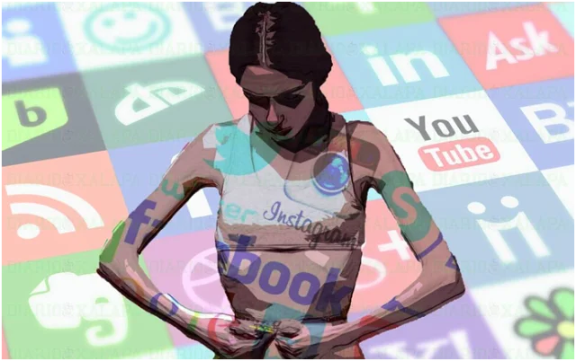

Las redes sociales y el desarrollo de trastornos alimentarios en adolescentes
En la actualidad, los adolescentes viven inmersos en un mundo digital, donde la proliferación de mensajes que muestran modelos de delgadez inalcanzables y estándares rígidos de belleza son cada vez mayor, y esto contribuye al desarrollo de la insatisfacción con el propio cuerpo. Este artículo se propone analizar la influencia de las redes sociales en la construcción de la autoimagen y el desarrollo de trastornos alimentarios en adolescentes.
Por Virgina Funes y Morena Celiz
Introducción
La adolescencia es una etapa de profundos cambios físicos, emocionales y sociales que vuelve a los jóvenes especialmente vulnerables a las presiones externas. En este contexto, las redes sociales ocupan un lugar central en la vida cotidiana, funcionando no solo como un espacio de comunicación, sino también como un escenario donde circulan mensajes que refuerzan estereotipos de belleza y modelos de delgadez muchas veces inalcanzables. Esta constante exposición puede impactar de manera negativa en la percepción del cuerpo, generar insatisfacción con la propia imagen y, en algunos casos, favorecer el desarrollo de trastornos de la conducta alimentaria (TCA). “Según un artículo de la Sociedad Argentina de Pediatría elaborado por profesionales del Hospital Garrahan, los trastornos de la alimentación en los adolescentes, son problemas frecuentes que pueden tener un alto impacto en la salud y calidad de vida, con riesgo de retardo del crecimiento, desnutrición e incluso la muerte, acompañados, generalmente, de alteraciones emocionales que comprometen su normal desempeño en diferentes áreas”1.
Los TCA constituyen un problema de salud pública, ya que implican alteraciones persistentes en los hábitos alimenticios, la relación con la comida y la visión sobre el peso y la imagen corporal. Sus consecuencias afectan no solo la salud física, sino también el bienestar emocional y social de quienes los padecen. A pesar de su gravedad, con frecuencia permanecen ocultos por vergüenza, desconocimiento o estigmatización, lo que dificulta su detección temprana y abordaje adecuado.
El presente estudio tiene el propósito de analizar la influencia que ejercen las redes sociales en la construcción de la autoimagen y su posible incidencia en el desarrollo de conductas alimentarias de riesgo entre adolescentes.

Fuente: Centro Damar
Trastornos alimentarios
Los trastornos de la alimentación, también conocidos como trastornos de la conducta alimentaria, son enfermedades que se caracterizan por alteraciones de la conducta alimentaria. Aunque hay ocasiones en que muchas personas se pueden preocupar por su salud, peso o apariencia, algunas se fijan excesivamente o se obsesionan con la pérdida de peso, el peso en sí o la forma corporal y el control de los alimentos que consumen. “Los trastornos de la conducta alimentaria constituyen un grupo de enfermedades biopsicosociales ….Se presentan como comportamientos alimentarios anormales, acompañados por una distorsión en la percepción de la imagen corporal y una preocupación excesiva por el peso y la comida”2.
Entre los más frecuentes se encuentran la anorexia nerviosa, la bulimia nerviosa y el trastorno por atracón. Estos problemas no solo afectan la relación con la comida, sino que tambien impactan en la autoestima, las emociones y las relaciones sociales.
Desde el 2024, se realizó una investigación para conocer la prevalencia y percepción de estos trastornos entre adolescentes. De acuerdo con los datos obtenidos, un alto porcentaje de los encuestados manifestó haber sentido presión por cumplir con ciertos estándares de belleza. Entre los participantes, más del 70% afirmó haberse comparado fisicamente con otras personas de manera frecuente, y un número significativo reconoció haber modificado su alimentación con el objetivo de perder peso, incluso sin necesidad médica.
Redes sociales
Las redes sociales son el espejo en el que se miran los adolescentes. Un espejo que proyecta ideales estéticos basados en una perfección irreal y cuyo uso puede generar fuerte impacto en su autoestima, autoconcepto e imagen corporal. Esta exposición permanente a imágenes idealizadas influye en la manera en que los jóvenes perciben su propio cuerpo, generando inseguridad, baja autoestima y conductas de riesgo relacionadas con la alimentación.
Muchos especialistas sostienen que las redes sociales ejercen un papel clave en el desarrollo y mantenimiento de los TCA, siendo en muchas ocasiones un factor precipitante de los mismos, fomentando en personas vulnerables la preocupación por el cuerpo y la alimentación. En personas con TCA, pueden dificultar la toma de conciencia de la enfermedad, normalizando conductas poco saludables y manteniendo las creencias negativas acerca de uno mismo mediante la comparación constante con otras personas.
Diversos estudios han alertado sobre esta relación. Una investigación publicada en la revista Eating and Weight Disorders3 advierte que cada hora adicional frente a la pantalla o en redes sociales incrementa la probabilidad de que un niño o adolescente desarrolle síntomas de un trastorno alimentario. Estos síntomas pueden incluir preocupación excesiva por el peso, restricción de calorías, vómitos, uso de laxantes o píldoras para adelgazar, y conductas compulsivas como el ejercicio excesivo o los atracones.
Conclusiones
Las redes sociales, entonces, no solo contribuyen al inicio de los trastornos de la conducta alimentaria (TCA), sino que también pueden mantenerlos y reforzarlos en quienes ya los padecen. En lugar de ayudar a tomar conciencia de la enfermedad, muchas veces normalizan prácticas dañinas y fortalecen creencias negativas sobre uno mismo, mediante la comparación constante con otros cuerpos.
Ante este panorama, resulta clave que padres, docentes y adultos responsables comprendan el papel de las redes sociales en la vida de los adolescentes. La influencia de los llamados influencers es enorme, ya que se convierten en modelos de referencia que marcan hábitos, creencias y aspiraciones. Por ello, se vuelve fundamental promover un uso crítico y consciente de las redes, generar espacios de diálogo y acompañar a los adolescentes para que puedan desarrollar una relación más saludable con su cuerpo y con la alimentación.
Citas
- Información extraída del “Rol de las Redes Sociales en los Trastornos Alimenticios”. En: https://www.portalgarrahan.org.ar/sin-categoria/el-rol-de-las-redes-sociales-en-los-trastornos-alimenticios/
- Los trastornos en la conducta alimentaria afectan la salud física y emocional. En: https://www.austral.edu.ar/los-trastornos-en-la-conducta-alimentaria-afectan-la-salud-fisica-y-emocional/
- En “Las redes sociales se vinculan con trastornos alimentarios en niños y adolescents”. En: https://www.infobae.com/salud/2024/09/13/las-redes-sociales-se-vinculan-con-trastornos-alimentarios-en-ninos-y-adolescentes/
Bibliografía
- Flores Ibarra, Alisson Lucero Ruth, “Redes sociales y desarrollo de trastornos alimentarios en adolescentes”. En: https://repositorio.upch.edu.pe/handle/20.500.12866/16093
- “Las redes sociales se vinculan con trastornos alimentarios en niños y adolescents”. En: https://www.infobae.com/salud/2024/09/13/las-redes-sociales-se-vinculan-con-trastornos-alimentarios-en-ninos-y-adolescentes/
- Lezama Reyes, Carlos A. “Salud, comunicaciones y redes sociales.Impacto de las redes sociales en los trastornos de alimentación”. En: https://www.alanrevista.org/ediciones/2015/suplemento-1/art-216/
Imagen de portada | WritersTour